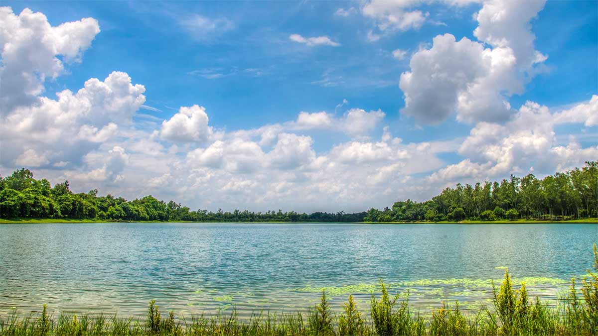

I love only travel.I was going to syllet 22 octobor in 2023.My next tour ,i was going to banderban.i did not go to any tour .iwas going to trabel in dinajpur.
Sylhet is known for its tea plantations and natural beauty.[4] The city has a history dating back to the 14th century and has been ruled by various dynasties and empires, including the Mughals, British, and the Nawabs of Bengal. The city is also home to several important landmarks, such as the Shah Jalal Dargah, which is one of the holiest sites in Bangladesh and attracts thousands of pilgrims every year.[5]
Bandarban is a district in South-Eastern Bangladesh, and a part of the Chittagong Division. It is one of the three hill districts of Bangladesh and a part of the Chittagong Hill Tracts, the others being Rangamati District and Khagrachhari District. Bandarban district is
Bangladesh naturre